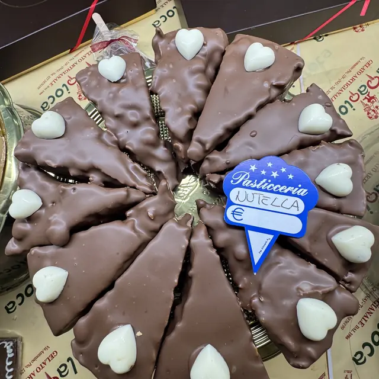
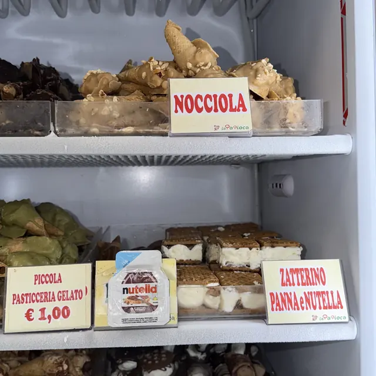
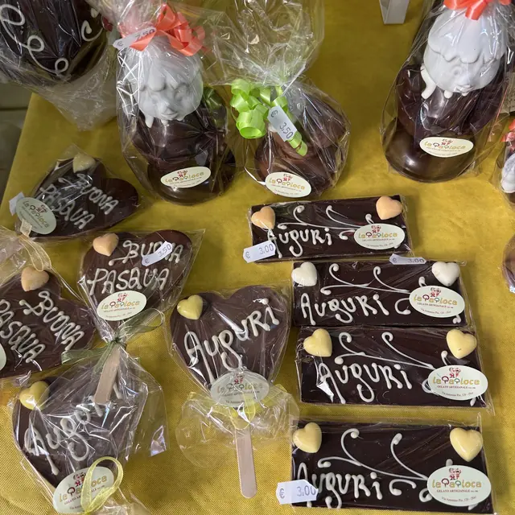

★★★★★
Grande gelateria si fa sempre una bellissima figura quando si offre un loro prodotto gli ospiti rimangono a bocca aperta
Un merito speciale al maestro gelatiere Eduardo
Gelateria a Pianura, in Via Antonino Pio, 129.
4,7272 recensioni GoogleVia Antonino Pio, 129, 80126 Napoli, NA
Via Antonino Pio, 129, 80126 Napoli, NA
Lun chiuso · Mar–Ven 09:00–13:30 · 16:00–21:30 · Sab 09:00–13:45 · 16:00–22:00 · Dom 09:00–14:45 · 17:00–22:00
Le 4 foto che La Papioca ha caricato sulla sua scheda Google.



4,7 su 5 · 272 recensioni su Google. Qui sotto alcune, riportate senza modifiche (i nomi sono abbreviati).
Grande gelateria si fa sempre una bellissima figura quando si offre un loro prodotto gli ospiti rimangono a bocca aperta
Un merito speciale al maestro gelatiere Eduardo
Gelateria fantastica 🍦
Gelato davvero buonissimo, cremoso e con gusti fatti benissimo. Si sente che usano ingredienti di qualità e ogni volta è impossibile uscire delusi.
Personale super gentile e ambiente molto tranquillo e accogliente. Anche quando c’è gente il servizio è veloce e sempre con il sorriso 😂
Ormai è diventata una tappa fissa, soprattutto la sera.
Consigliatissima ❤️
Gemma nel cuore di Soccavo. Gelati buonissimi a prezzi ormai introvabili, croccante all’amarena meglio dell’originale e nocciola tra le più buone provate. Poi a tutto ciò si unisce il cuore e la gentilezza di Salvatore e Virginia, due persone strepitose!! Andateci!!
Il gelato è una cosa buona e, se ben fatto, è buonissima. Una gelateria di "lungo corso" garantisce qualcosa in più grazie alla sua esperienza.
Per chi non lo avesse ancora fatto, assaggiate i gusti tradizionali e quelli nati più recentemente: vi piaceranno entrambi!
Gelati,cioccolato,chiacchiere, zeppole spettacolari.Sono cliente da 19 anni praticamente da quando mia madre mi accompagnava,da bambino, a comprare il mio gelato preferito...gusto amarena e puffo.
| Lunedì | Chiuso |
|---|---|
| Martedì | 09:00–13:30 · 16:00–21:30 |
| Mercoledì | 09:00–13:30 · 16:00–21:30 |
| Giovedì | 09:00–13:30 · 16:00–21:30 |
| Venerdì | 09:00–13:30 · 16:00–21:30 |
| Sabato | 09:00–13:45 · 16:00–22:00 |
| Domenica | 09:00–14:45 · 17:00–22:00 |
La Papioca
Via Antonino Pio, 129, 80126 Napoli, NA
327 587 6199
Orari della scheda Google: nei festivi possono cambiare, chiamateci per conferma.